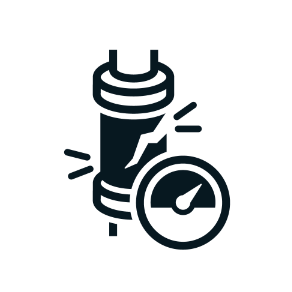

A vezetői képzések célja az adott témakör tömörített, kifejezetten menedzsment nézőpontból felépített ismertetése. A tréning során a vezetés kapcsolódó feladataira koncentrálunk, illetve igény szerint bemutathatunk javasolt piaci gyakorlatokat, és mentorálási projekt keretében segíthetünk a bevezetés megtervezésében és a kész tervek implementálásában is.
Minőségirányítási módszerekből az autógyártásban szokásos rendszereket adjuk át, illetve ezek egyszerűsített oktatását vállaljuk a járműipar egyéb szegmenseinek és azoknak az egyéb termelő vállalatoknak, ahol ezek a módszertanok jól implementálhatóak. Az oktatás során nagy hangsúlyt kap a használhatósági szemlélet, és a gyakorlatba ágyazás képességének a fejlesztése. A képzéseket licenszelt tanúsító auditor által lektorált tananyag mentén tartjuk, a szabványismeretet pedig minden esetben licenszelt tanúsító auditor oktatja.

A fentieken túl módszer- és szoftverspecifikus képzéseket nyújtunk az alábbi három témában. A részletes ismertetők a képzések oldalain találhatóak.